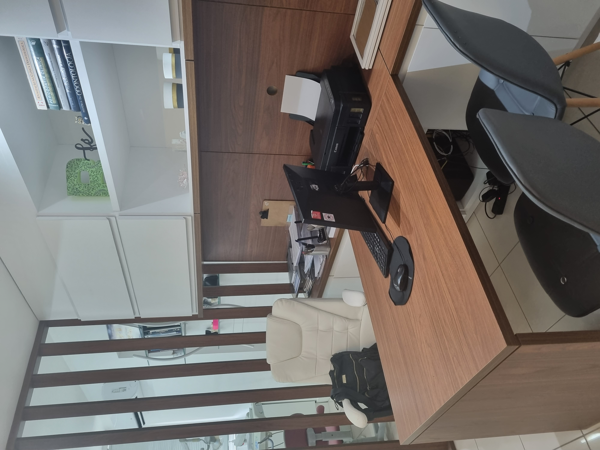
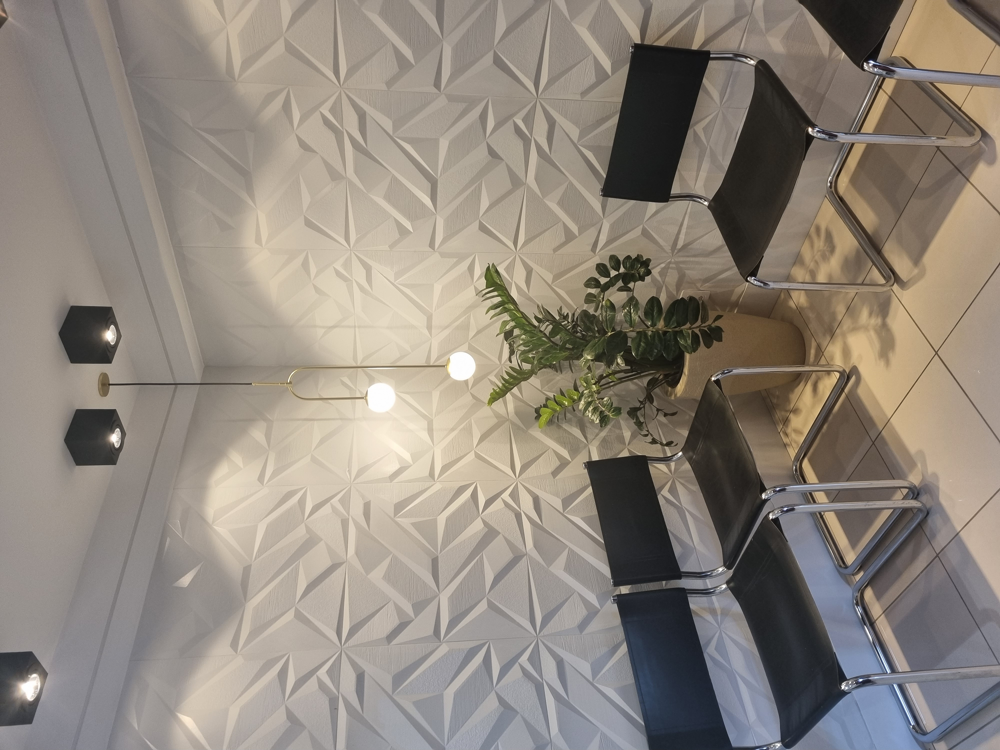
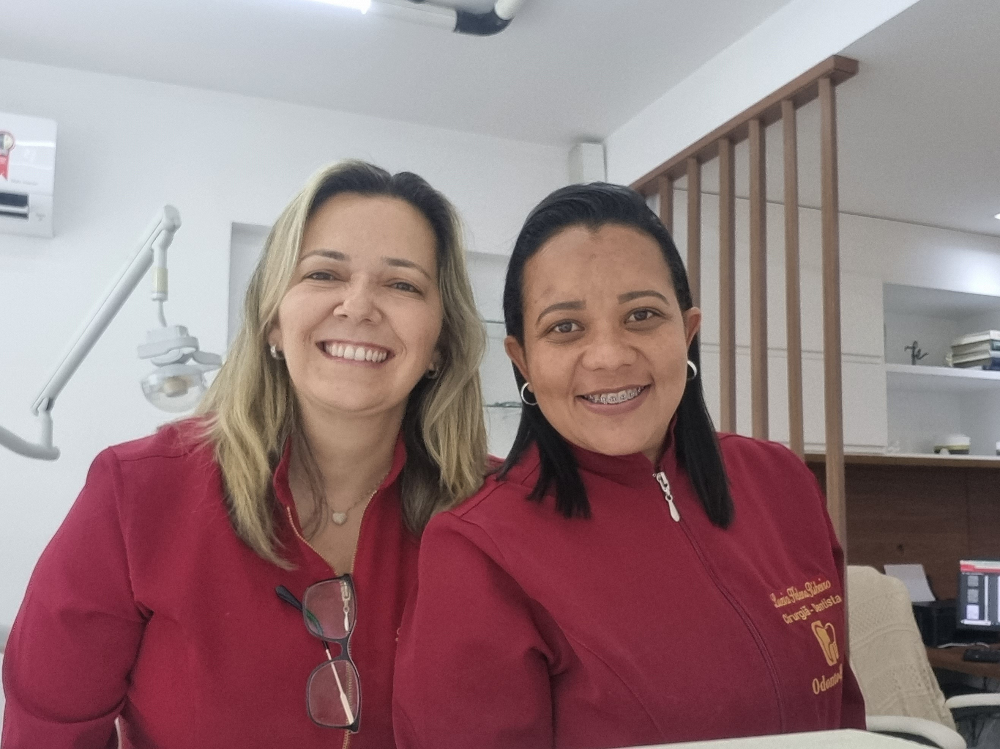
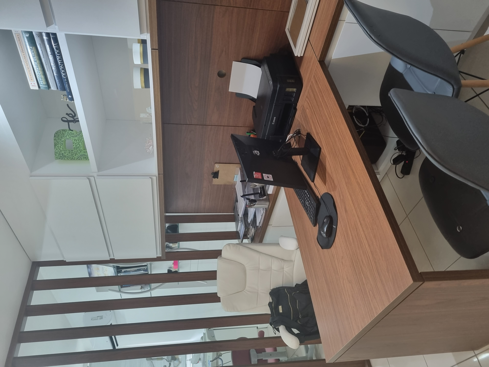
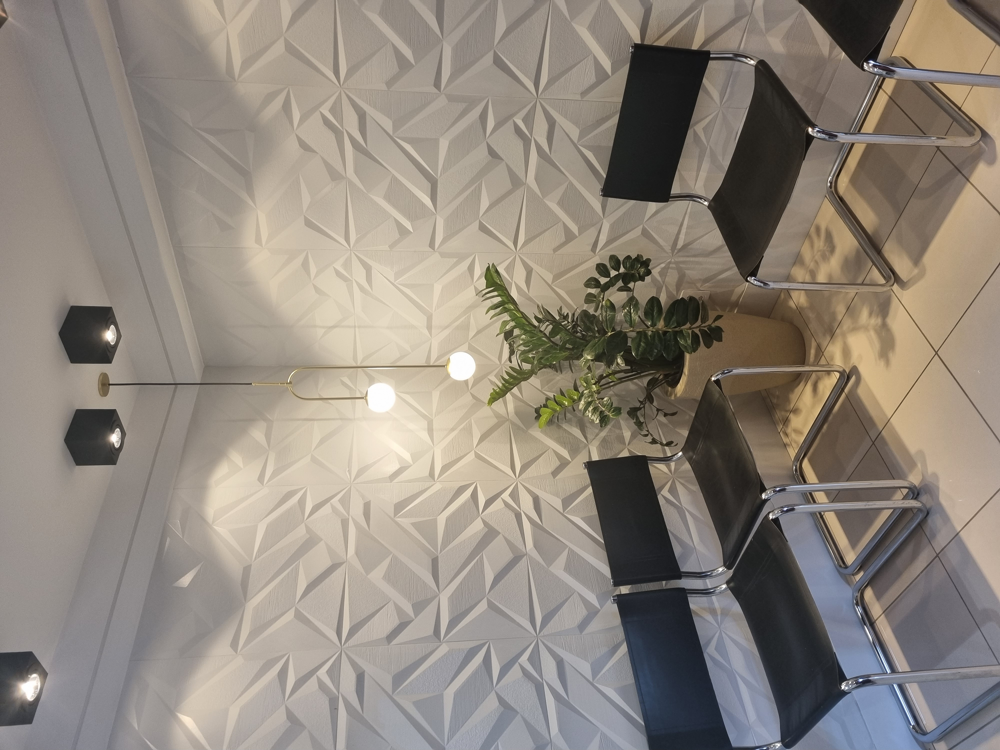
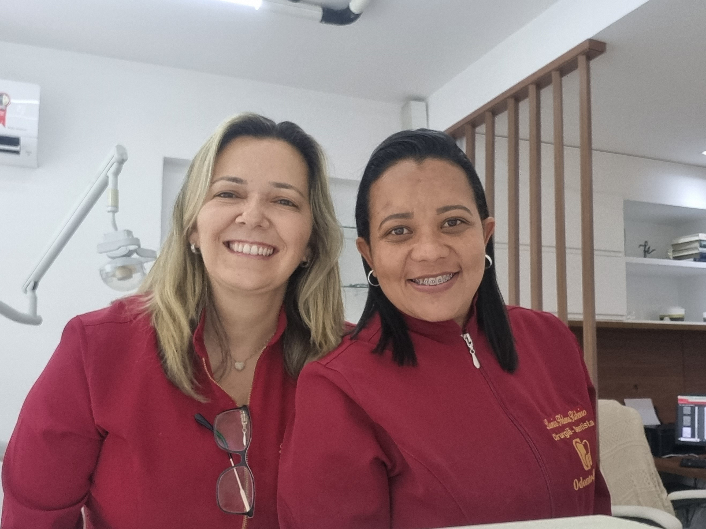

Conheça os tipos de implantes
Implante Unitário
Indicado para pessoas que perderam um dente, o implante dental consiste em um pino de titânio que desempenha o papel da raiz do dente ausente. Esse pino é colocado no osso da mandíbula ou da maxila e serve como suporte para a instalação de um dente fixo substituto.
Implante Múltiplo
Indicado para pessoas que necessitam de implante dentário devido à ausência de dois ou mais dentes, esse procedimento oferece uma solução eficaz. Quando há a falta de dentes vizinhos, é possível realizar a colocação de uma ponte fixa sobre os implantes dentários, para uma restauração completa.
Protocolo
Recomendada para pessoas que perderam todos os dentes, a Prótese de Protocolo é a solução perfeita. Com a colocação de 4 a 6 implantes dentários, é possível obter uma prótese fixa que recupera por completo sua autoconfiança e restabelece a funcionalidade na hora de mastigar.
Volte a mastigar com segurança
Sente saudades de desfrutar uma refeição completa, saborear os alimentos favoritos? Os implantes irão lhe ajudar.
Dentes fixos novamente
Os implantes dentários trarão seus dentes fixos de volta, para que você possa sorrir e comer com todo o conforto que você merece.

Volte a sorrir sem medo
Você sente vergonha pela falta dos dentes? Não permita que isso afete sua autoestima e seus relacionamentos pessoais.
Tratamento rápido e indolor
Tratamento moderno e sofisticado que combina tecnologia de ponta para um procedimento rápido, praticamente indolor, com recuperação quase imediata.
 




